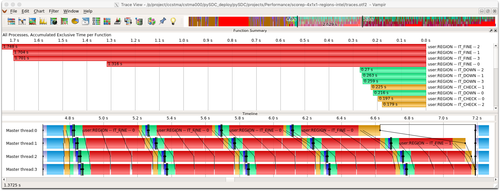
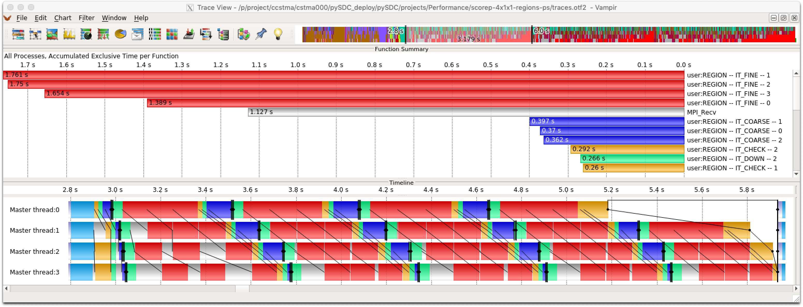
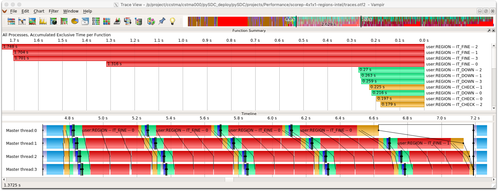
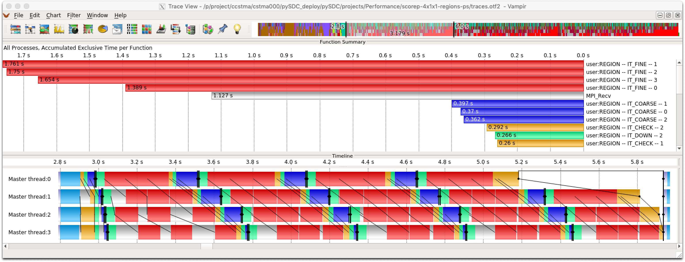

Performance analysis of pySDC¶
In this project, benchmark and analyze pySDC using tools like JUBE, Score-P, VAMPIR and CUBE. The goal is to verify the controllers and to understand the parallel performance of space-time parallel runs. This code is in parts used for the publication “Performance tools for parallel-in-time integration with pySDC”. Warning: This project is not tested during CI/CD, since it relies on the HPC system JURECA at JSC.
Python codes¶
The main code used for the analysis is the script run_simple_forcing_benchmark.py, taken from the Allen-Cahn project.
It can run parallel in space (with FFTs) and parallel in time.
For tracing with manual instrumentation, we modify the MPI-based controller so that regions of interest are defined (fine sweep, coarse sweep, transfer etc.).
In addition, the script visualize.py helps to show the results of the benchmarks using matplotlib.
Jobscripts¶
In order to run the code, JUBE is primarily used.
For this, xml-files are needed to specify the parameter spaces for JUBE to run (number of processes, type of implementation etc.).
These are given by jube_run_pySDC_AC_space.xml and jube_run_pySDC_AC_spacetime.xml.
In addition, a jobscript template is used which is changed by JUBE for each run, see run_pySDC_AC.tmpl.
There is also a stand-alone jobscript (run_pySDC_AC.exe) as well as one for usage with Score-P (run_pySDC_AC_scorep.exe).
The use of Score-P and JUBE on JURECA is described in the two howto-files.
Results¶
The project already contains some output files, where traces have been visualized using VAMPIR. For this, there is also a VAMPIR settings file available to help reproducing the pictures.
Full codes: pySDC/projects/Performance/
Results:
 



{kind=link}
{kind=link}